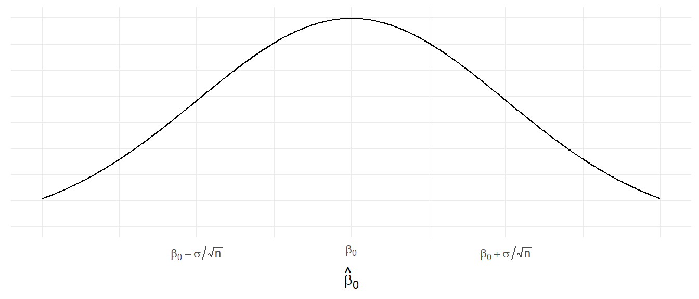
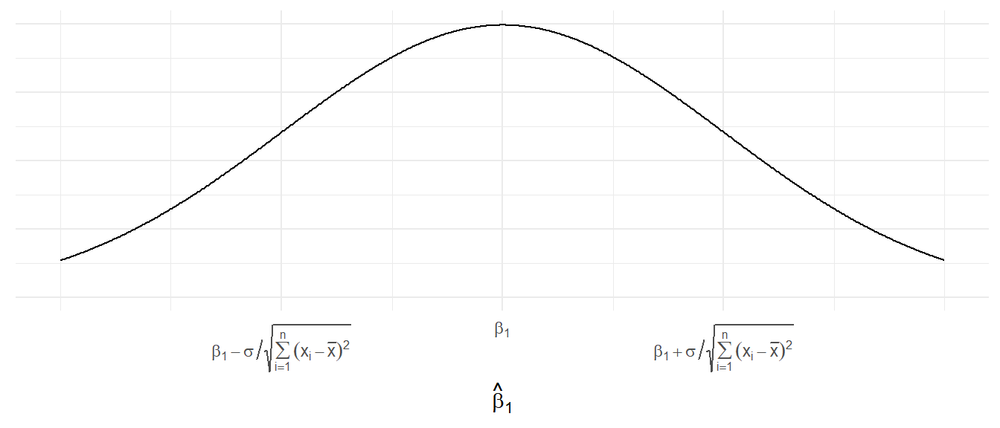

You can also download a PDF copy of this document.
Consider a regression model with no explanatory variables such that \[
E(Y_i) = \beta_0.
\] It can be shown that the least squares estimator of \(\beta_0\) is simply the sample mean of the observations, \[
\hat\beta_0 = \frac{1}{n}\sum_{i=1}^n y_i.
\] That is, \(\hat\beta_0 = \bar{y}\). If certain assumptions about the model are correct, then it can also be shown that the sampling distribution of \(\hat\beta_0\) is approximately normal in shape, \[
E(\hat\beta_0) = \beta_0,
\] meaning that the mean of \(\hat\beta_0\) equals \(\beta_0\) (i.e., \(\hat\beta_0\) is an unbiased estimator), and \[
\text{Var}(\hat\beta_0) = \sigma^2/n,
\] where \(\sigma^2\) is the variance of the response variable \(Y_i\). Thus the standard error is \[
\sqrt{\text{Var}(\hat\beta_0)} = \sigma/\sqrt{n}.
\] The plot below shows the sampling distribution of \(\hat\beta_0\)  The standard error \(\sigma/\sqrt{n}\) cannot be computed since \(\sigma\) is unknown, but we can estimate \(\sigma\) with the estimator \[
\hat\sigma = \sqrt{\frac{\sum_{i=1}^n (y_i - \hat{y}_i)^2}{n-k-1}},
\] where \(\hat{y}_i = \hat\beta_0\) and \(k\) is the number of explanatory variables so \(k = 0\) here. The confidence interval for \(\hat\beta_0\) is computed as \[
\hat\beta_0 \pm t\frac{\hat\sigma}{\sqrt{n}},
\] where \(t\) is a value from the \(t\)-distribution with \(n - k - 1 = n - 1\) (because \(k = 0\)) degrees of freedom to specify the desired confidence level. A test of the null hypothesis \(H_0: \beta_0 = c\) for some number \(c\) would use the test statistic \[
t = \frac{\hat\beta_0 - c}{\hat\sigma/\sqrt{n}}.
\] The \(p\)-value is computed using the \(t\)-distribution with \(n - 1\) degrees of freedom. If we change the notation by replacing \(\beta_0\) with \(\mu\) and \(\hat\beta_0\) with \(\bar{y}\) then you have a confidence interval and test statistic for inferences about \(\mu\) based on a single sample of observations — typically the first examples of inference that are seen in an introductory statistic course. The estimated standard error and test statistic shown above would be shown by the summary function, where the test statistic is for the null hypothesis that \(\beta_0 = 0\). The confidence interval shown above is reported by the function confint.
Now consider a regression model with one explanatory variable so that \[
E(Y_i) = \beta_0 + \beta_1x_i.
\] It can be shown that the least squares estimators of \(\beta_0\) and \(\beta_1\) can be written as \[
\hat\beta_0 = \bar{y} - \hat\beta_1\bar{x},
\] and \[
\hat\beta_1 = \frac{\sum_{i=1}^n(y_i - \bar{y})(x_i - \bar{x})}{\sum_{i=1}^n(x_i-\bar{x})^2}.
\] These estimates are shown by summary. Furthermore, if certain assumptions are met, it can be shown that \(\hat\beta_0\) and \(\hat\beta_1\) each have an approximate normal distribution, that these two estimators have means equal to the parameter being estimated meaning that \(E(\hat\beta_0) = \beta_0\) and \(E(\hat\beta_1) = \beta_1\), and that the variances of these two estimators are \[
\text{Var}(\hat\beta_0) = \sigma^2\left[\frac{1}{n} + \frac{\bar{x}^2}{\sum_{i=1}^n(x_i - \bar{x})^2}\right],
\] and \[
\text{Var}(\hat\beta_1) = \frac{\sigma^2}{\sum_{i=1}^n(x_i - \bar{x})^2}.
\] The standard errors of \(\hat\beta_0\) and \(\hat\beta_1\) are then then \[
\sqrt{\text{Var}(\hat\beta_0)} = \sigma\sqrt{\frac{1}{n} + \frac{\bar{x}^2}{\sum_{i=1}^n(x_i - \bar{x})^2}},
\] and \[
\sqrt{\text{Var}(\hat\beta_1)} = \frac{\sigma}{\sqrt{\sum_{i=1}^n(x_i - \bar{x})^2}}.
\] So the sampling distribution of \(\hat\beta_1\), for example, would look like the following.  Again, since \(\sigma\) is unknown, these standard errors are estimated by estimating \(\sigma\) with \[
\hat\sigma = \sqrt{\frac{\sum_{i=1}^n (y_i - \hat{y}_i)^2}{n-k-1}},
\] where now \(k = 2\). These estimated standard errors are what are shown by summary. The test statistics shown by summary are computed as \[
t = \frac{\hat\beta_0 - c}{\hat\sigma\sqrt{\frac{1}{n} + \frac{\bar{x}^2}{\sum_{i=1}^n(x_i - \bar{x})^2}}},
\] and \[
t = \frac{\hat\beta_1 - c}{\hat\sigma/\sqrt{\sum_{i=1}^n(x_i - \bar{x})^2}},
\] These are the test statistics for the null hypotheses that \(\beta_0 = c\) and \(\beta_1 = c\), respectively, but summary only shows the test statistics for when \(c = 0\). The confidence intervals for \(\beta_0\) and \(\beta_1\) shown by confint are computed as \[
\hat\beta_0 \pm t\hat\sigma\sqrt{\frac{1}{n} + \frac{\bar{x}^2}{\sum_{i=1}^n(x_i - \bar{x})^2}}
\] and \[
\hat\beta_1 \pm t\frac{\hat\sigma}{\sqrt{\sum_{i=1}^n(x_i - \bar{x})^2}}.
\]
Expressions for the least squares estimators and the variances and standard errors of those estimators in the case of two or more explanatory variables are very tedious to write without using matrix algebra. This is also true for the variances and standard errors of many estimators based on linear combinations.